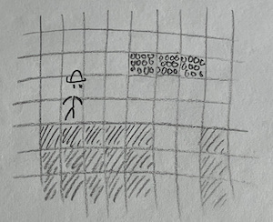
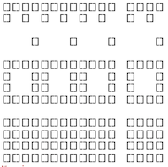
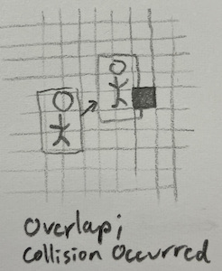
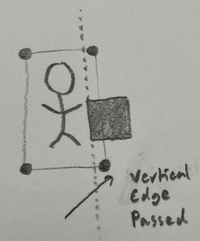

Game: Super Rrio Platformer
rrio.Rmd#>
#> [][][] [][][] [] [][] [][][]
#> [][] [] [][][] [] [] [][]
#> [] [] [][][] [] [] [][] [][][] v1.0.0
#>
#> Open `vignette("guide")` to get started!
#> Warning in fun(libname, pkgname): Please use RStudio! rcade may not work in
#> other environments.This ROM and article are not finished yet! Here you can see a sneak peek of some of the systems and parts of it.
Intro
a downside is that a game like this deserves its own documentation (since it uses complex systems), which I don’t have reason enough to document… but this rom at least shows that rcade is capable of letting you do pretty much whatever you want in terms of gamedev if you know how
3. Obstacles: the Collision
Before we can add more control to Rrio, we have to create ground for him to interact with. I’d like to take the approach Super Mario Bros. uses— if we store tiles of ground in a grid, it’s very easy to tweak and edit, and makes drawing a lot simpler as well. We’ll call this grid of tiles the collision.

3.1 Storing the Collision
We can encode our grid of tiles with a matrix, where 0s indicate empty space and different numbers specify different tiles. For this game, we’ll end up treating all tiles the same—as solid tiles that block Rrio—but they’ll have different graphics depending on which tile they are.
3.2 Tile Graphics (make sure these are accurate to the final)
Let’s make some sprites for the different tiles. I’ve already decided that I want each tile to occupy 4x4 pixels on the screen. This isn’t much to work with, so the sprites will be relatively simple.
We could actually make the game a lot prettier if we changed it to
use ASCII graphics (see ?render.matrix for an example), but
I’m sticking to pure pixel art for the sake of it.
Anyway, here are the basic tile sprites: each one is repeated 3 in a row, as they’re intended to tile together.

These areSuperRrio$sprites$ground_tile, $brick_tile,
and $rock_tile respectively, used for the ground, floating
platforms, and uneven terrain.
3.3 Tile Stitching
To render the collision, we could draw each tile as its own sprite and location, but this is needessly expensive. Instead, we can use the collision matrix to fill in a single sprite corresponding to the onscreen portion of collision, and draw that sprite in a static location. Rather than make the sprite move its xy position, we let math move the tiles inside the sprite every time we generate it.
[image?]
Code TODO
4. Collision Physics
Now for the main purpose of the collision: colliding. The collision is there to block Rrio’s (and other enemies’) motion, and provide surfaces for them to stand on.
We implement this by checking each frame if a given physics object (like Rrio) has touched the collision, and resolving it if they did— by, for example, stopping them flush with the tile they hit instead of letting them phase through it. Objects experience ballistic freefall when they aren’t touching any collision, as you’d expect in the real world.
I came up with this specific implementation of collision detection and resolution by myself, but I suspect many games have converged on the same implementation and I doubt the details are novel. There are definitely better systems out there too1, but this one works well enough and is pretty satisfying!
4.1 Checking if a Collision has Happened
The first step is to see if the object has actually hit anything. To do that, we see if the object’s bounding box—the invisible box around them that we use to check collision—has overlapped any tiles of collision this frame.
I usually make the bounding box roughly match the position and size of the object’s sprite, but this doesn’t always have to be the case; giving an object a smaller bounding box than its sprite suggests can make it feel more lithe and mobile, and I set Rrio’s bounding box to have a height of 1.8 tiles so he can fit through 2-tile gaps.

This is achieved in code by calculating the subset of tiles the bounding box occupies (i.e. every tile the bounding box is present in), and seeing if any of those tiles are solid.
Code TODO
4.2 Checking Collision Direction
If a collision occurred, the next step is resolve it. We’d like to move the object’s bounding box flush with the edge of the tile it hit2, but to do that, we first need to know which edge that is.
Luckily, we don’t actually need to know anything about the tile to see which edge was entered. We can do some [[][][]][ thinking:
We already know a collision has occurred, so we must have hit at least one tile somewhere.
We can only going to collide with tiles in the direction we’re moving.
We can only collide with tiles if we pass a gridline, e.g our position goes from
2.5to3.2(passing the3gridline).
This gives us enough to assert that if the leading edge (i.e. the one going forwards) of our object’s bounding box passes a gridline, we’ve collided with a block on that edge.

However, this reasoning only works in one dimension. So we do this collision checking process twice: once vertically (landing on tiles), then horizontally.
Code TODO
4.3 Landing
The player expects to start falling if they walk off a cliff. We have to add some code3 to make sure that happens.
Generally, this is done by pretending the player is falling every frame; this causes them to immediately reland on whatever surface they were on. And if they’ve walked off of something, they’ll just start falling.
I usually track falling status with a property called
grounded for objects with gravity; grounded is
true if the object is sitting on a surface. Then at the start of the
collision function we set grounded to false, and then reset
it to true if the object lands on a flat surface; since this is entirely
contained in the function, the rest of the game code will think the
object has been grounded this whole time.
[GIF of rrio falling off a cliff]
6. Game Camera
Here’s the plan for how the screen should scroll:
- Rrio will always be fixed in the center of the screen, like in most games of this genre.
- The screen will only scroll vertically when it ‘needs to’— when Rrio is grounded 3+ tiles above/below the center of the screen. Some other games use this effect and it feels pretty intuitive.
Since Rrio’s position on the screen is determined by his
RAM$objects$rrio$x and $y, we can fix
$x in the center of the screen and have $y
react to his real position in the level ($pos.y).